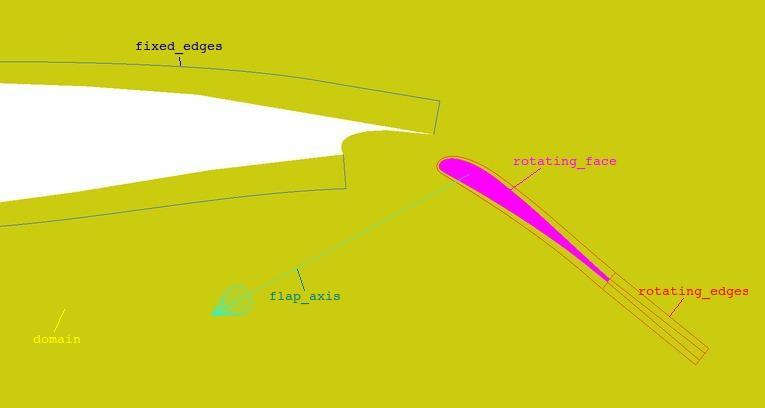
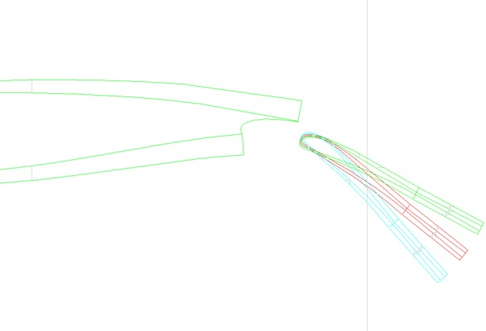
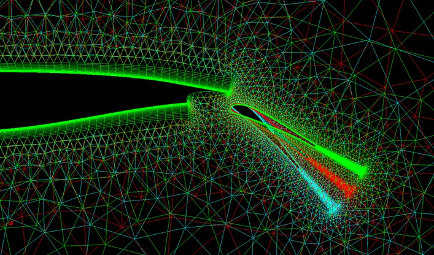

cfdmsh 4.0 documentation
cfdmsh 4.0 documentation cfdmsh 4.0 documentation


Rotates a flap, generates a mesh and exports it into an .amsh file readable with Edge 5.0.0.
This function is an example of possible highly custom function easy to develop. Any user is invited to study it so as to develop one's own "cfdmsh-like" functions.
In this case, for each angle given by the user, the function rotates a flap face and surrounding edges, then cuts a domain face with the flap face and partitions it with the flap edges and the "fixed edges" given by the user. Once the partition is generated, groups are imported from a group file previously generated thanks to the ExportGeometricalGroups function. Then, a mesh is created and a mesh configuration is imported from a mesh file generated thanks to the ExportMeshConfiguration function. Once computed, the mesh is exported thanks to the ExportAmshFile function.
def RotateFlapGenerateAndExportMeshInAmshFormat( angles, group_file = "cfdmsh_grps", mesh_file = "cfdmsh_msh", domain = "domain", fixed_edges = "fixedEdges", rotating_face = "rotatingFace", rotating_edges = "rotatingEdges", flap_axis = "flapAxis", keep_mesh = True, help = False ):

| Name | Description | Type | GUI selection [?] | Selection by name [?] | Recursive [?] | Default value |
|---|---|---|---|---|---|---|
| angles | The list of flap angles to compute | List of Floats | - | - | - | - |
| group_file | The name of the group file to import in the final partitions. | String | - | - | - | "cfdmsh_grps" |
| mesh_file | The name of the mesh file to import in the meshes. | String | - | - | - | "cfdmsh_msh" |
| domain | The face describing the domain before cutting the flap face. | Face | - | yes | - | "domain" |
| fixed_edges | The compound of edges which won't move with the flap. | Compound of Edges | - | yes | - | "fixed_edges" |
| rotating_face | The face describing the flap. | Face | - | yes | - | "rotating_face" |
| rotating_edges | The compound of edges which move with the flap. | Compound of Edges | - | yes | - | "rotating_edges" |
| flap_axis | The axis of the flap rotation. | Edge | - | yes | - | "flap_axis" |
| keep_mesh | If equals True, meshes are not cleared after each mesh export. | Boolean | - | - | - | True |
| help | This argument is passed to the ExportAmshFile function. | Boolean | - | - | - | False |
| dim Value [?] | single Value [?] | Type | Number | Name |
|---|---|---|---|---|
| - | - | - | - | - |


To use this function, the group file and mesh file have to be previously generated manually and the hypotheses to be used in the mesh have to be present in the study.
cfdmsh 4.0 documentation
tougeron-cfd.com © 2016